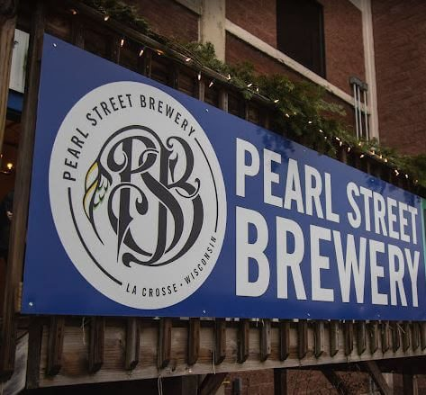

Our Story
Twenty-five years of La Crosse beer.
Pearl Street Brewery opened on December 4, 1999 in the basement of the Bodega Brew Pub at 122 Fourth Street downtown. Brewmaster Joe Katchever had just driven from Colorado to La Crosse in a 1984 Eagle Wagon, towing a trailer of brewing equipment and an idea about what good Wisconsin beer could be.
By 2003 the beer was winning Gold medals at the World Beer Championships. By 2005 we had outgrown the second location on Second Street. And in 2006 we opened the doors of the current taproom inside the historic La Crosse Footwear building on St. Andrew Street, where we still brew today.
In 2024 the La Crosse Area Chamber of Commerce gave us a Legacy Award for twenty-five years of pouring beer in this town.